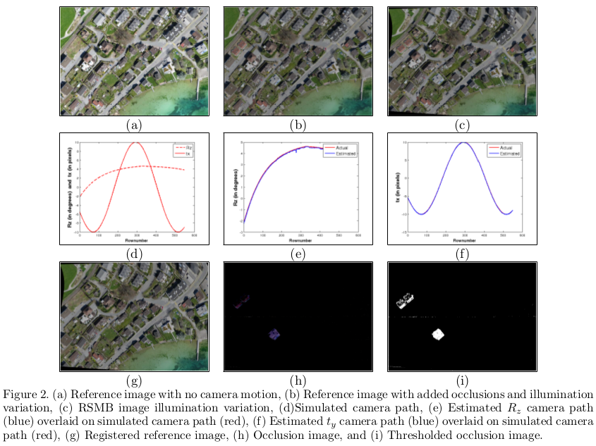

Change detection between two images in the presence of degradations is an important problem in the computer vision community, more so for the aerial scenario which is particularly challenging. Cameras mounted on moving platforms such as aircrafts or drones are subject to general six-dimensional motion as the motion is not restricted to a single plane. With CMOS cameras increasingly in vogue due to their low power consumption, the inevitability of rolling-shutter (RS) effect adds to the challenge. This is caused by sequential exposure of rows in CMOS cameras unlike conventional global shutter cameras where all pixels are exposed simultaneously. The RS effect is particularly pronounced in aerial imaging since each row of the imaging sensor is likely to experience a different motion. For fast- moving platforms, the problem is further compounded since the rows are also affected by motion blur. Moreover, since the two images are shot at different times, illumination differences are common. In this paper, we propose a unified computational framework that elegantly exploits the sparsity constraint to deal with the problem of change detection in images degraded by RS effect, motion blur as well as non-global illumination differences. We formulate an optimization problem where each row of the distorted image is approximated as a weighted sum of the corresponding rows in warped versions of the reference image due to camera motion within the exposure period to account for geometric as well as photometric differences. The method has been validated on both synthetic and real data.
Illumination Robust Change Detection with CMOS Imaging Sensors
Vijay Rengarajan, Sheetal B. Gupta, A.N. Rajagopalan, and Guna Seetharaman
SPIE Defense + Security Symposium, International Society for Optics and Photonics, Baltimore, Maryland, USA
April 2015
Paper (6.1MB)
Slides (3.1MB)
@proceeding{ rengarajan:2015:illumination,
author = {Rengarajan, Vijay and Gupta, Sheetal B. and Rajagopalan, A. N. and Seetharaman, Guna},
title = {Illumination robust change detection with CMOS imaging sensors},
journal = {Proc. SPIE},
volume = {9473},
number = {},
pages = {947303-947303-9},
year = {2015},
doi = {10.1117/12.2176816},
URL = {http://dx.doi.org/10.1117/12.2176816},
}
Given a reference image and an RSMB image of the same scene but with a different illumination, we estimate the row-wise camera motion between the two images and the multiplicative illumination factors to register them, and simultaneously detect the regions of changes between them.
|  |
Vijay Rengarajan, A.N. Rajagopalan, and R. Aravind
European Conference on Computer Vision (ECCV), Zurich, Switzerland
September 2014 [PDF] [Project page]